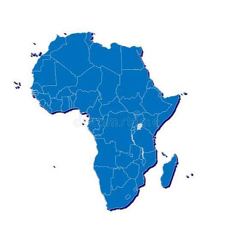

Um continente com uma riqueza natural incrível e beleza natural Deslumbrante Do outro lado pobreza e surtos de vírus por falta de saneamento básico para um povo humilde e trabalhador.
Como podemos ajudar nossos irmãos a sair desta situação e ter básico que todo ser humano merece !

Transmissão e Sintomas
Contágio direto
O vírus é transmitido pelo contato com sangue, secreções ou fluidos corporais de pessoas ou animais infectados.
Sintomas iniciais
Febre repentina, fraqueza extrema, dores musculares, de cabeça e de garganta.
Evolução grave
Vômitos, diarreia, erupções cutâneas e, em muitos casos, hemorragias internas e externas violentas.
Histórico
Descoberta (1976)
Causada por vírus do gênero Orthoebolavirus, a infecção foi registrada pela primeira vez com altas taxas de letalidade.O vírus foi identificado pela primeira vez em dois surtos simultâneos na República Democrática do Congo (perto do Rio Ebola) e no Sudão do Sul.
Reservatório Natural
Cientistas apontam os morcegos-da-fruta como o principal reservatório natural do vírus, que pode ser transmitido para humanos através do contato com animais silvestres (carne de caça) ou entre pessoas por meio de fluidos corporais.
O Maior Surto (2014–2016
O Maior Surto (2014–2016): Atingiu a África Ocidental (Guiné, Libéria e Serra Leoa), tornando-se a maior e mais complexa epidemia registrada, com mais de 11.300 mortes.
Principais Vacinas Existentes
rVSV-ZEBOV (Ervebo)
Vírus vivo-atenuado recombinante administrado em dose única (1,0 mL por via intramuscular). Protege contra a cepa Zaire e é aprovada em países da União Europeia, Estados Unidos, Canadá e nações da África
Esquema Ad26.ZEBOV + MVA-BN-Filo
Esquema combinado de duas doses (com intervalo de 8 semanas), indicado para populações em áreas de risco
Novas pesquisas
Diante de surtos recentes causados por cepas mais raras (como a Bundibugyo), a Organização Mundial da Saúde e parceiros como a Moderna avançaram no desenvolvimento e avaliação de novos imunizantes.
Principais Medidas de Biossegurança
Nível de Contenção Laboratorial
O manuseio e cultivo do Orthoebolavirus (vírus do Ebola) exigem laboratórios de nível de biossegurança 4 (NB-4), o mais alto padrão de contenção existente, devido ao alto risco de letalidade e ausência de tratamento amplo em estágios avançados.
Equipamentos de Proteção Individual
Profissionais de saúde e socorristas devem utilizar (EPI) paramentação completa e reforçada, que inclui macacões impermeáveis ou aventais cirúrgicos de gramatura alta, luvas duplas, proteção facial, óculos de proteção, máscaras especiais, toucas e botas de borracha.
Desinfecção e Limpeza
A desinfestação de superfícies e materiais deve ser feita com agentes oxidantes de amplo espectro com eficácia comprovada contra vírus envelopados, como o hipoclorito de sódio e o peróxido de hidrogênio, seguindo rigorosos tempos de contato.
Controle de Transmissão
Como o vírus não é transmitido pelo ar, a biossegurança foca em bloquear o contato direto com sangue, secreções, órgãos ou fluidos corporais de pessoas infectadas ou de cadáveres (em rituais fúnebres).
Transporte de Pacientes Suspeitos
Órgãos de atendimento pré-hospitalar (como o SAMU) seguem protocolos específicos de isolamento do paciente em ambulâncias adaptadas e treinamento certificado para a colocação (paramentação) e retirada (desparamentação) segura dos EPIs.